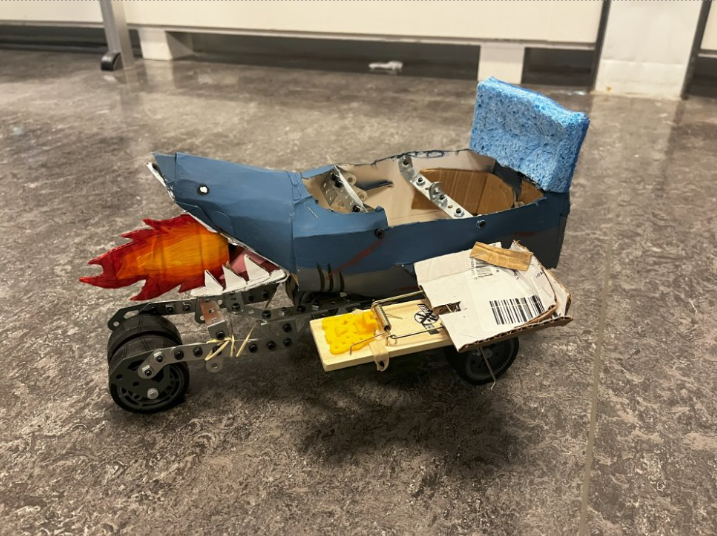
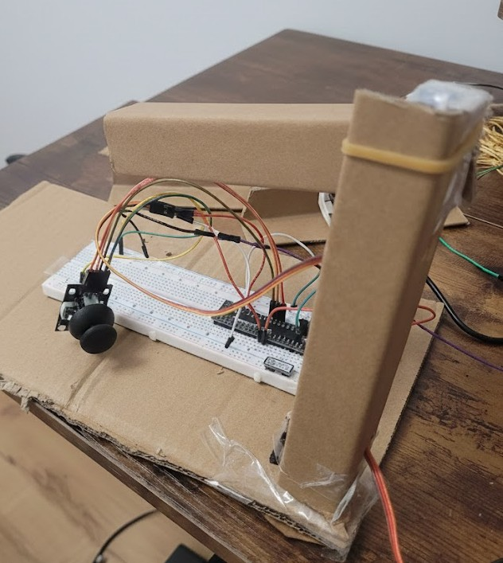
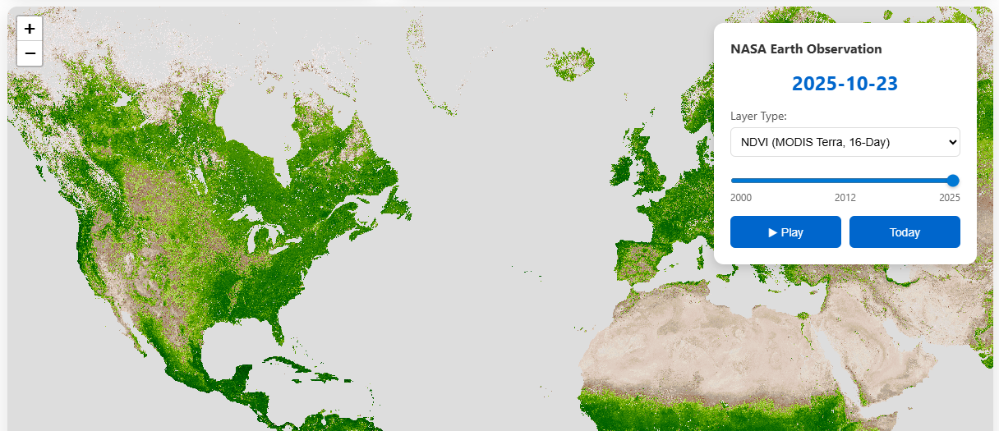
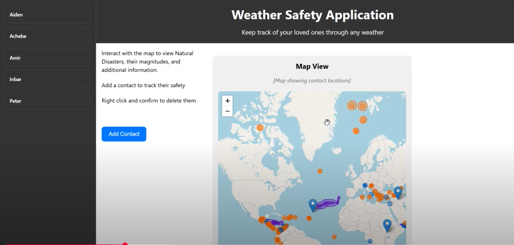
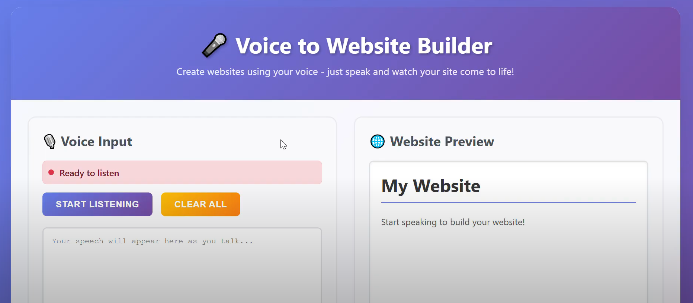
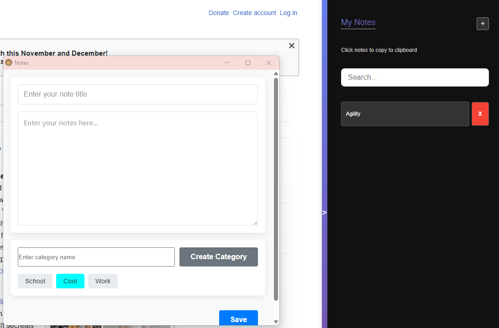

Daniel Hyman
About me
Systems Engineering student at the University of Guelph, interested in Robotics, Automation, and Embedded Systems.

Hardware and CAD Projects
Automated Mini Vehicle
The Arduino code for an Automated vehicle developed to overcome 3 chalenges: a race, launching an item over a wall, and carrying 4 lbs up a ramp. Built with C++, Arduino, Meccano Parts, and Household items.
View on GitHub Learn more
Four-bit Arithmetic Logic Unit
An ALU designed to preform 8 arithmetic and 4 logic operations and display the output on a 7 segment display.
Learn more
Robotic Arm
Ongoing project to design a 3D printed, 3-DOF Arm with a gripper on the end, controlled by a bluetooth app.
View on GitHub

Programming Projects
Leaf Watch
Uses live NASA NDVI and Thermal data to map and track areas in the world with the highest deforestation rates in order to plant trees in the most optimal locations.
View on Github Learn more Weather Safety App
A full-stack Django web application that allows users to track their friends' locations in real-time and alerts them if those friends are within or near current disaster zones. This project uses the Kontur Disaster API for live hazard data and Leaflet.js for interactive mapping.
View on GitHub Video Demo Voice to Website Builder
A platform for blind or otherwise, disabled users to create a website, through verbal communication. Can also be used for general convenience.
Link to Platform View on Github Trackify Chrome Extention
This Chrome Extension allows users to bookmark sentences, webpages, and images, as well as take notes to remember and come back to them later.
View on GitHub 